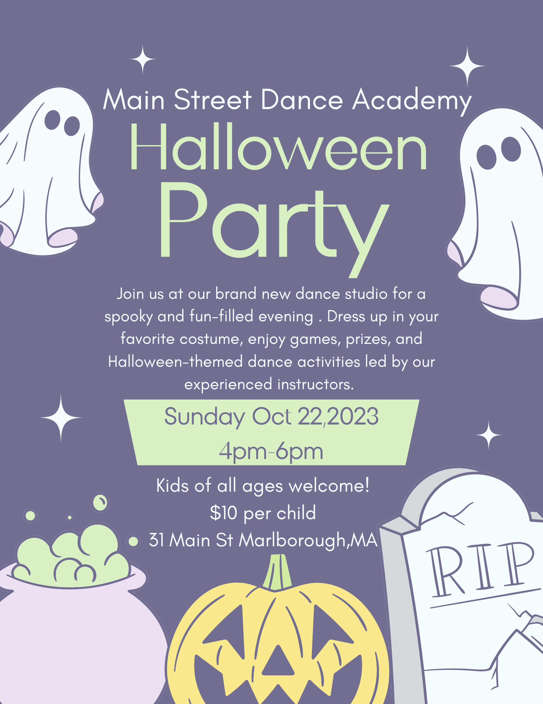

Another little fun fact about me is that I love social media. I was extremely lucky to have two friends who needed help in the social media aspect of their businesses and I was able to step in and learn a little more about my passion.
For Main Street Dance Academy
I was able to help my friend Christy build a website on Wix and manage her SEO for her business. As we all make all of the promo for her social media pages. I used canva most of the time as it was simple and I was able to share it with the staff of the studio as well.
Although we had a rough go of luck with the studio I learned a lot of what works and what doesn't for social media.
Here is a review of my work from Christy Zwicker the owner of Main Street Dance Academy :
Jenny has played a vital role in the formation and growth of Main Street Dance Academy. Jenny's expertise and attention to detail has greatly helped us build a solid platform for our new buisness. She was the sole designer behind our website and our Social Media coordinator. Jenny was instrumental in the Search Engine Optimization of our website and google business page, her skills and passion were the driving force in our online presence. We also utilized her audio talents in preparing the music for our recital. You can tell that Jenny takes great pride and passion in the work she does and is very receptive to feedback and new ideas. I look forward to continuing to work with Jenny not only with this endeavor but many more in the future.
⁃ Christy Zwicker (Owner)

For Kundy Media
I offered to help my friend Jay edit TikTok videos. From that we started a podcast as well as doing video game reviews and keeping up our alcohol related videos.
I also was able to code a website for Kundy Media to have one place where our fans could go to see all our drink recipes and game reviews.
This also got me the opportunity to attend PAX East in March of 2024 as a media person.
Here is a review of my work from Jay Kundy Owner of Kundy Media :
Jenny Allbee has been integral to the KundyMedia Platform. She was brought on as our Social Media coordinator and Video Editor. She has brought a new quality that was missing from our Kundymedia videos. As a video editor Jenny has worked with multiple on screen talents and producers in a collaborative environment. She herself has joined as on screen talent on multiple projects and is always ready to help where needed. I hope to work with her more in the future to bring our new D&D projects to fruition.
- Jay Kundy (owner & creator)